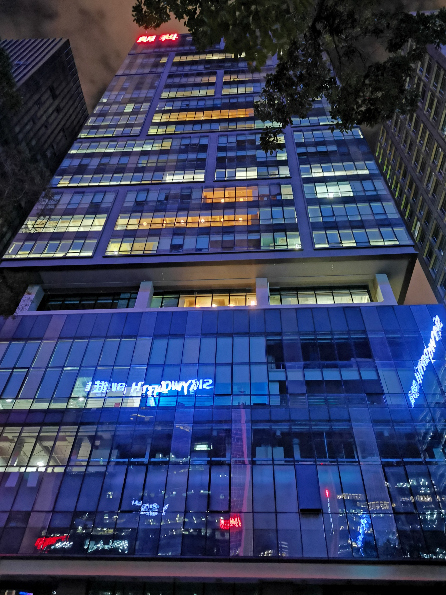
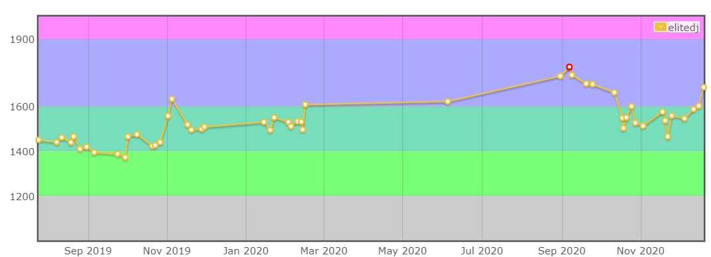
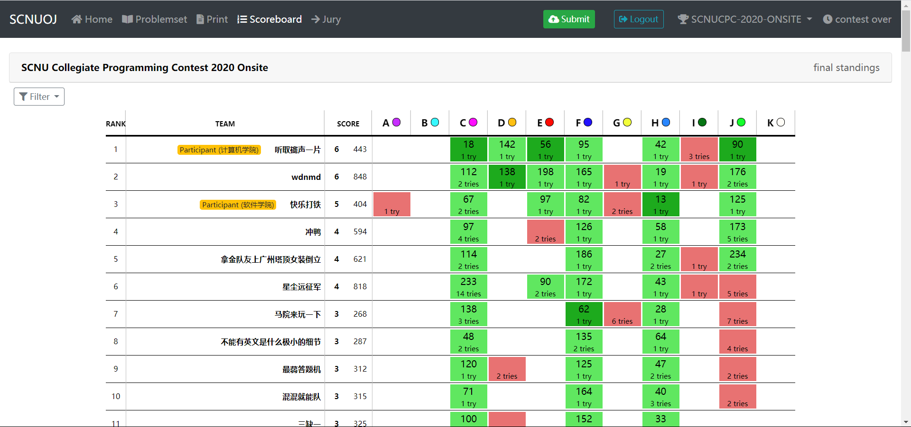
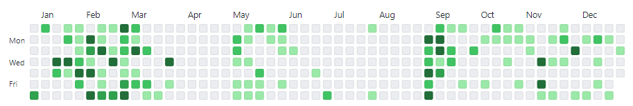
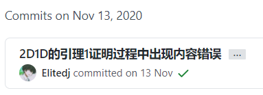

2020是很操蛋的一年，但对于我来说又是很重要的一年。大三的结束意味着我到了一个分岔路口，工作/读研/考公/其他……，这一年在这个分岔路口犹豫徘徊，最后也是做出了对我人生而言很重要的一个决定吧。
今年的挺多事情都是交叉发生的，用线性的方式实在是太难表述清楚了，尽力回顾这一年把一些比较重要和有意思的事情记录下来吧~
工作
大三上的期末考试结束之后，发现大厂的暑期实习已经开始招聘，意识到该准备找实习了。但是学院根本不会告诉你这个时候该要找实习了，跟着学院的节奏按部就班的走总是落后于人。拉上lt和lms一起准备找实习，结果他们两个也不知道找实习要大三上结束的寒假就开始准备，真是好家伙呢。
从二月份开始准备，刷刷Leetcode和看看知识点，一直到三四月份才投简历。简历的模板是从大型同姓交友网站上找的，稍微改了一下，有需要的可以看看，但是需要有$\LaTeX$的环境。自己的项目经历实在是欠缺，简历上只有个ICPC的铜凑一凑，剩下的都是一些很基本的东西。
找实习投的都是大多数人听过的厂，不太知名的都不在我的考虑的范围内，最后拿到了鹅厂、字节、网易的实习offer，因为那段时间每一周都掺杂着很多笔试和面试，感觉挺累的，加上很多base都是外省的，就把其他还在面试的公司直接拒掉了。下面是一些投递情况：
- 腾讯（offer）
- 字节跳动（offer）
- 网易（offer）
- 阿里巴巴（内推部门一个月未联系，被别的部门捞了，联系我的人也不懂什么情况，很迷）
- 百度（一面邀约）
- 华为（笔试满分无面试邀约，很迷）
- 美团（一面邀约）
- 拼多多（二面邀约）
- 快手（一面邀约）
- 虎牙（HR面一个月后显示不匹配，很迷）
当时虎牙是第一个面完的公司，等了很久都没什么消息，问了HR小姐姐也说在等，估计是我的项目经历不够，还是差一点吧。面虎牙记得比较深刻的是有一轮面试，面试官问我”你们学校没有工作室什么的吗？我看广工这方面搞得很好”，场面有点尴尬，我也不知道我院的学生主要在干嘛…emmm，只能说很羡慕广工的氛围。
面网易是我感觉最轻松愉快的一次，问题都挺简单的，一面都很基础，全答上来了，问的算法题都给面试官讲的明明白白的，到二面的时候全程都在问项目的东西，但是答的不是特别好，面试官倒是挺好的，一直在引导，后来问了一下说是一面的面试官给我的基础评价很高，所以二面就不问了emmm。到HR面的时候，问我能实习几个月，那时候疫情还挺严重的，就答了两个月，明显感觉到HR不是很满意，说他们那边一般都是六个月emm，略尴尬，以为HR面要挂了，但是最后还是拿到offer，还挺意外的。
投字节的时候本来打算投互娱的后端开发，但是投的实在是太晚了，已经招满了，系统自动帮我转岗到客户端，被搞安卓的捞了，想着无妨，就面试一下。网传的字节笔试都是Leetcode中等起步，我可能运气好吧，面了两轮技术面，两道简单，一道中等，一道难。第一轮就很常规，也不问安卓的东西，可能是今年客户端确实很难找到人吧，也不要求有客户端的基础了。第二轮技术面聊了很多字节的一些发展方向的东西，感觉挺不错的。
腾讯在提前批快结束的时候把我捞了起来，应该是要在提前批结束前跑完所有的流程，所以进度飞快，两天就面完了所有面试。第一轮面的挺基础的，面完刷了一下官网显示过了，然后就愉快地打游戏去了，晚上十点的时候突然来了一个深圳的电话，一接果然是腾讯的，面试官开头第一句话就是“今天我同事面试了你，我这边还有一些问题想问问你，你现在有空吗？”，总之大概的意思是这样吧，感觉就很奇怪，不会下午哪里出了问题要凉了吧。而且那边不知道是信号还是什么问题，比较难听见说什么，还伴随着沙沙声。主要是聊了一下ICPC的经历，问了一些团队合作的问题吧，毕竟自己经历的，没什么特别难的地方。挂掉电话去官网刷了一下，直接就到HR面了，喵喵喵？？有点刺激。HR面就很常规，感觉HR挺忙的，聊了一下子就结束了。等了一两周就收到offer了。
总的来说还行，笔试和面试的算法题都没什么问题，面试问的基础问题也还好，好好准备一下问题不大。主要还是要早做准备早点投简历，金三银四，后来人别像我一样那么晚才投。鹅厂和网易拿到的都是后台，字节拿到的是安卓，衡量了一下还是选择了鹅厂。
因为担心疫情加上还有一些线上的课，一直到六月份才入职。来深圳最头疼的是租房的问题，深圳的租房实在是太贵太贵太贵了，西乡十平左右的小破房都要1600/月，没有阳台，晒不到太阳，深圳的房东真的是靠收租就能实现自己的梦想了。万幸小区门口就是班车站点，每天通勤坐班车都要50min左右，挺难顶的。因为我们这边是部门统招的实习生，分组感觉就是随机分的，我干的活和我所在的小组一点关系也没有，按照行政管理上来说，我的导师是kevin，而从干活的角度上来说我的导师又是miya，不过有两个导师感觉也挺好的。这也导致了我一个人游离在三个组，分在策略组，干的后台组的活，和运开组一起恰饭。同事们都挺好的，氛围也不错，第一天就适应了环境。在装环境的时候miya带我认识了rex，说以后我们俩一起干活，rex比我早来一周，练手的项目都快搞定了，只是还在调一些bug，装完环境就开始看rex的源码了。不是说前三天基本都是摸鱼没啥活的嘛，我这刚来就开始干活了是咋回事，喵喵喵？
实习主要就是做两个项目，一个练手，一个比较正式的，练手项目大家都差不多，正式的那个项目我和rex做的是部门为数不多的ToC产品民汉翻译小程序。整体做下来难度还好，更多的是要去思考项目的细节和更深入的问题，leader和总监也都更想要看到思考的东西。和rex一起做事感觉挺舒服的，不拖沓，有困难一起上，真的不错。
实习的时候一般早上七点半起床，坐八点的班车，吃完早餐九点左右到工位上，倒一杯热茶开启美好的一天 : ）早上感觉整个人还是迷迷糊糊的，一般就干一点小活，把重要的活都留在下午和晚上干掉。中午吃完饭刷一会b站就稍微休息一下，到两点就起来全力输出。晚上吃完饭继续刷手机或者b站，到七点继续干活，晚上一般坐十点的班车回去，有时候会稍微晚一点点，回到小破房也十一点了，一般刷会手机洗个澡就睡大觉。周末因为太无聊了，在小破房很自闭，就会去朗科做点事情，顺便逛一些404网站。总的来看工作日是没有太多自己的时间的，周末能稍微休息一下，所以时间管理真的很重要（无内涵hhh）。

在中期答辩完的时候，miya希望我和rex在做民汉的时候不要把目标放在项目上线上，而是多深入思考项目，这对于我和rex来说真的很sad，甚至一度很down，作为一个开发者，当然很希望我们做的东西能够被用上，我想所有搞技术方面的人都能够懂我当时的心情。我和rex是几个实习生小组里做的唯一一个ToC产品，或许民汉对部门来说确实不怎么重要吧，但是对于我和rex来说，真的很重要，我们非常希望能够完成这一次大的重构。down了一段时间还是重新振作起来了，走之前还是成功迭代了，灰度了70%，也许走后一两天就全面上线了吧，这种感觉真的很不错，很棒。
8月25号离职的，那一天还是我的农历生日，上午答辩完下午就和rex溜了，给同事买的喝的都没来得及亲手送上，真是略尴尬。在滨海还完工卡和Token的那一刻真的很高兴，和期末考完放寒假的感觉差不多吧hhh
总的来说在鹅厂搬砖还是可以的，氛围挺好的，伙食也还行，双休，大范围覆盖的班车。大厂比较注重基础和思考，对于应届生的搬砖能力没有小公司那么看重，好好准备进大厂实习还是不太难的。答辩完的下午就知道自己能够拿到正式的offer，所以还是比较轻松愉快地~~~
保研
保研是每一年的大好戏，懂的都懂。从大一的时候觉得保研的都好厉害啊，到现在的怎么那么多乱七八糟的东西。
大三结束的时候其实没有想好要读研还是工作的，不过我很清楚我是绝对不会去考研的，嗯，很肯定。那么留在眼前的就剩下保研和工作两条路了，为了稳妥点，就打算尽可能找个好实习，然后争取一下保研的名额。
因为今年疫情影响很大，大三下没法开学，这就导致很多算法竞赛都被冲掉或者延期了，这对于我来说不是一个好消息。我知道我的绩点在保研的竞争者里排很低很低，只能靠自己擅长的算法竞赛扳回一城，而算法竞赛对于我、zdm、ljr来说是非常有利的，能够领先其他人很多很多。毕竟谁也想不到会是这样的情况，这让本就是边缘人的我感觉自己彻底无望，不过材料肯定是要交的，万一呢？
我院保研综测是75%的绩点+15%的科研竞赛+10%的面试，绩点已经无法改变了，而且绩点拉不开太大的差距，面试大家都差不多，关键的还是看科研竞赛的加分。其中有一个参与者互审材料的环节，我算是见世面了， 有的人的list都两面了，和砖头一样厚的证明材料，这肯定就是外行人里面的强者/奖学金收割机/家长眼里的学霸吧，和晚华吹过的情侣学霸大学期间合砍100+奖状有异曲同工之妙，其实懂的都懂，什么乱七八糟的水赛都往上整，各种大水刊使劲发，各种项目在里面混。只是审的我头皮发麻，极度不适。
我院的保研加分的规则和评奖学金的差不多，只是保研的时候ICPC竞赛的加分减少了很多（这简直就离谱，好多学校金牌直接保研，好家伙SCNUCS反而降分）。我原本以为我审的时候遇到的已经很离谱了，直到今年奖学金评比的时候，真的是妖魔鬼怪群魔乱舞，一年的科研竞赛加分就700+，这还是大三下没开学的情况，喵喵喵？还有一堆400+/500+/600+的，要知道16级保研的时候三年的加分最多也就到400+，17真的是神仙群聚，我三年的加起来都不如各位半学期，成功的人都有用不完的精力，我想他们肯定都具备这一个特质，无时无刻不在水比赛吧，是我的问题。不过评奖学金是后话了。
因为保研的时候ICPC加分很少，于是就几个人一起去提了意见，再加上我院保研的规则一直都被诟病，估计被提了好多届吧，今年大刀一挥，把神仙们的宝器砍伤大半，这也是为什么今年科研竞赛加分最多的都不到200，可见我院这一次改革砍死了多少水赛。不过肯定不可能一次就达到完美理想的状态，这一次改革对打CTF的同学实在是不公平，瞎评级，加分是真的少，替他们不值。
保研结束之后思考了一下，拿到保研资格又意味着什么呢？我们肯定经常听到谁谁谁家孩子保研到了哪个哪个牛逼的学校，换做以前的我肯定也会感叹他们好厉害啊。但是，现在的我完整的经历了这一个过程之后，我开始问我自己，真的厉害吗？或者说，真的都厉害吗？我们从小到大都被各种评价标准打着标签，优、良、A+、D等等等等，那么，成功拿到保研资格的人，就是保研这一项活动的A+，而其他人就是D。拿到保研资格的同学仅仅是在保研的条条框框下筛选出的“优秀”，换一种评价方式就又会有新的一批“优秀”，仅此而已。
我觉得我们学院的导向稍微有点奇怪，不够重视计算机科学的基础，非常鼓励大家参加各种创新创业的项目活动，这给我一种非常奇怪的感觉，走路都走不稳就被赶着学跑步了。我认为应该重视基础，带同学们领略计算机科学的方方面面，让同学们从中寻找自己的方向，而不是一股脑的在同学们还未有太多认知前就把大家往几个方向赶。
绝大多数人在长大的过程中变得越来越俗，小的时候我们都会被问长大后想要做什么，会有老师、医生、科学家之类的回答，现在我们说要做老师，先想到的是老师稳定、安逸、有多的假期，而不是教书育人、桃李满天下，说要做医生，先想到的是社会地位高，越往后越吃香，而不是救死扶伤。而读研同样如此，有多少人读研是为了科研，是喜欢科研的呢？大多数人都是为了混个学历找一份好工作。
当然，我自己在这bb那么多并不是为了显得我很清高，相反，我同样很俗，我同样无法心静如水的跳出这些怪圈，大方承认这一点并不难。只是希望大学能够远离世俗的东西，减少功利性的东西，让更多满怀理想的人在大学里为科学献身。
关于保研，今年在0xFFFF也掀起了一番讨论，感兴趣的可以看看这一篇帖子。
搬砖or读研
很幸运，能够在大厂搬砖和保研这两个“不错”的选项中做选择，但是同样也很苦恼，当两个这么好的选择放在眼前必需二选一的时候真的很痛苦，不管选哪一个都会感到后悔和可惜，有的时候没有选择就是最好的选择。
我这个末流211渣本就是家族里的最高学历了，并不是我有多厉害，而是家族的兄弟姐妹有多不愿意读书。不论是父亲这边的亲戚还是母亲这边的亲戚，都很希望我能够继续冲击更高的学历，这很正常，能够理解。其实这种现象并不是我拿到保研资格的时候才开始出现的，只要是大的聚会就会随口提到，希望以后考上某某某名校，怎么怎么牛逼，说着不给太多压力，顺其自然，其实多多少少还是会有一点的对吧，毕竟谁也不想让关心自己的人失望。
做出决定真的很难，其实没想到自己会拿到保研资格的，甚至有一刻希望自己不要拿到资格，这样就不用烦恼了。
最后还是选择去大厂搬砖，放弃保研的资格。保研对于我来说未知数太大了，自己上半年都忙于实习的事情，没有去参加各院校的夏令营，没有去准备面试的东西，也没有去了解各大学校和老师的情况，能否去到喜欢的院校，选上喜欢的导师，做自己喜欢的方向都是未知数。相反大厂offer已经是板上钉钉的事情了。其实呢，更主要的原因是我真的不喜欢也不适合科研，即便我读完研我也还是会去大厂搬砖。
怎么选择都会后悔，只能跟随当时的内心了，自己选的路怎么也得走下去啦。
很幸运，我、zdm和ljr三个人都拿到了保研的资格，ljr保研去了西交，zdm决定去广附当信竞教练，而我去深圳公仔厂搬砖，看起来都不错啊hhh
算法竞赛
19年底打完区域赛之后就没怎么练了，一是忙于ddl，二是忙着找实习，20年上半年时间基本都花在了实习的事情上，也就偶尔打打cf，整体来看今年打的稀烂，希望21年的ICPC能发挥好点，毕竟打完就得溜溜球啦。
CF
今年打的不多，很迷的是实习结束打了两场直接冲到历史最高rating，然后开学后疯狂掉分，直到年末再次回到小蓝名。长时间不打思维题果然是没思维了。

TPC
Tencent Programming Contest，是实习的时候在鹅厂内部打的一个比赛。刚实习的时候有一天翻邮箱翻到了TPC的信息，是第一届结束后的回顾之类的，感觉有点可惜没有早点入职，不然就赶上第一届了。不过很快就办了第二届，啪的一下就报名了，很快啊。总共就两场，都是单人solo，最后排名100+，白嫖了一件纪念T还是很愉快的，毕竟鹅厂一堆wf和金牌选手，实在是抢不到京东卡之类的奖品。题目质量还可以，实力菜，两场都只切了两题，一开始以为是微信那边的人出的题，直到2020 ICPC 南京区域赛看了cjb的知乎回答，才知道原来题目是SUA出的。
CCPC
实习完回来没多久就打CCPC的网络赛了，自己也就刚补完cf没打的场次的题，zdm和ljr今年也没怎么训练，CCPC网络赛是今年三个人第一次一起线下打大的比赛。很迷的是我们队过了人均都会的min25筛，而wdnmd和听取wa声一片没过，最后也很幸运的苟在了名额线内，拿到了人生首次CCPC区域赛的名额。
今年疫情影响太大，而大学生又是易感染对象，公费旅游泡汤了，只能在611打打线上赛，快乐–。正式赛czm把我和wsd、sjl组了一队，三个人在赛前的一个月vp了很多往年的区域赛，打的算还行吧，基本上都在牌区，就是有时候真的降智，打的很迷，不是特别的稳定。czm给我们选的绵阳站，赛场三个人一起降智，犯了sb错误，打的稀烂，懒得再提。打绵阳之前还一起看了秦皇岛和威海，秦皇岛我们打的话能够过5题，稳铜，威海倒是有点恶心，可能也能铜吧，总之选对赛区少打三年，选错赛区白打三年。第一次也是最后一次CCPC区域赛打的实在是难受。
CCCC
同样被疫情拖延了很久的CCCC终于办起来了，早早就被hhy内定一队，从大一的三队陪跑到大二的选拔进了一队到大三(四)内定进了一队，也算是一种进步了。打过CCCC的人都知道，L1和L2基本就是模拟暴力就完事了，就是题面是真的垃圾，有的时候不写人话，越打越恶心人。这一次自己也没怎么准备，都忙着准备CCPC去了，寻思着CCCC也就随便打打图个乐子。
模拟赛的时候服务器被冲烂了，体验极差，随便打了打就溜溜球了。正式赛的时候服务器也挂了一下下，但是还算好吧。就是自己真的很久没做CCCC的题，写的是真的恶心，最后还剩1h的时候自己也上头了，死活硬刚L1没拿满的点，忘了去看榜关注题目的情况，没去搞L3-1的sb题，导致自己没到175丢了个人的奖，队伍总分也差一点点国一，真的真的挺自责的，自己没拿到个人奖其实还好，丢了国一是真的烦，今年一队基本上都是牌子选手，是近三年最强的队了，也差一点点就打赢广工拿省一，打过那么多线上还容易上头确实不应该，菜是原罪。
2020 SCNU CPC
今年很幸运的被cy学长加入到出题人的行列，避免我这娱乐选手被吊打的局面。其实校赛本来打算在新生赛后一周就弄的，但是因为这一次和软院联合一起搞吧，就一直拖拖拖，加上某校级组织办事效率低下，就继续拖拖拖，不过还是办起来了。
本来是不打算弄预选的，但是人太多，机房容量有限，迫不得已弄了一个。出题人都挺忙的，哪怕预选出的都是入门题也来不及了，ht就提议直接在vj上拉cf的题，专门找有人翻译题面的题目，把原英文题面换成中文题面就能防止搜索了，轻松愉快。
好巧不巧的是预选赛开始前一小时cf测评姬炸了，队列卡了好几页，紧急缺氧，急急忙忙从atcoder找了题替换上去。俗话说得好，好事成双，开赛没多久一个大锅从天而降，不知道是大家交的太猛了还是vj这种爬虫机制被atcoder限制住了，根本无法提交，全部submit failed。在校赛群里当客服被冲烂了，然而一点办法也没有，只能运维祈祷.jpg。幸运的是一两个小时后就好起来了，一切变得正常，算是有惊无险的结束了，不然真的不知道怎么办好。
正式赛出了两个题，因为是我来组题册，特地把自己出的两个题放在了D和J。
D题是一个矩阵快速幂的模板题，只需要简单的推一下公式或者打表找一下规律，然后套模板就好了。本来这一题打算搞得复杂一点，从oeis找一个有意思的数列，围绕这个数列搞一个美妙的故事，然后再掺杂一点数据结构什么的进去搅一搅，后来觉得应该会没人写，还是出简单一点好了，直接斐波那契搞一搞就好了。最后D题过了两个队，+0那一队没过有点可惜，软院还有一队写的是矩阵快速幂，不知道哪里写挂了，也有点可惜。可能是这一题题面短，理解起来也不难，就很多人疯狂rush这一题，搞得我看后台就很迷，一堆队伍又wa又tle又re的，怎么还在疯狂rush呢，只要会算复杂度，就知道这个题不会优化的话线性推斐波那契肯定是超时的，还有一些尝试记忆化的，这么大的数据范围要么超时要么炸空间。
J题真的是一个签到题，根据题意的规则排序就可以了，只有一个小的数据范围的坑点和题面有点长以外真的没难度。按照我赛前的预测，这个题很多队伍都会wa几次，但是最后能通过，结果最后就过了7个队，大大出乎了我的意料。赛后这个题也被喷烂了，很多人说题面恶心，输入矩阵看不懂，搞得我有点迷，没想到题面把大家坑住了。题面我还专门找人验过，赛前验题也没什么问题，赛中cjh也问我J是不是模拟一下就行了，赛场上听取wa声一片直接1A，搞得我一直觉得没太大的问题，赛后被认为是最难受的题我是没想到的，也问了zdm和ljr，他们也说还好，就是题面有点长。以后签到题还是不出那么长的题面了，简单直接还不会被喷。
正式赛的榜开始的时候被严重带歪，导致两个题面较长的F和J很晚才被过，之后才稍微正常过来。从结果来看，区分度还行，也算是圆满结束吧。

开源&分享
博客
不算这一篇总结，20年一共写了15篇Blog，没有放弃就是最大的成功，耶！截止至今有1700+访问人次，3800+访问次数，毕竟某度难以搜索到，所以感觉还行啦。其实今年最开心的不是多了很多新的访问，而是有一天在网上冲浪的时候，发现了一篇Blog是参考了我写的某一篇Blog写的，这种感觉真的很棒。
今年写的基本上都是和XCPC竞赛相关的算法，记录一下新学的或者之前学的东西。希望自己之后能丰富一下其他的内容。
真的觉得大家有空都应该记录一些东西，毕竟每个人对事物的认知和感觉感悟都不太一样，这种从0到1的过程很美妙很有意思，时不时能从一些Blog中得到新的启发和灵感。
Github

今年的Github依然平平淡淡，零星几个Star和一次PR。
有一天在翻OI-Wiki的区间DP四边形不等式优化这一篇文章时，发现其中的证明存在书写错误，然后就随手提了一个PR，很快就被merge进去了，第一次就这样交代了hhh

0xFFFF
0xFFFF在今年搞得有声有色了，分享越来越多，Q群的消息也经常99+，gq师兄为SCNU的“搞机”氛围做出了巨大的贡献，赞！今年自己也时不时的发发帖和参与到其中的一些讨论中，感觉氛围很不错，自己发的找实习的帖子也带起了一波节奏。
其实很多信息是需要提前知道或者了解的，很多坑是不需要每一代的人都去踩的，0xFFFF就提供了这么一个信息聚合和记录的平台。除了各种技术讨论的帖子，比如萌新搭环境遇到的各种坑，就业和读研的一些信息我觉得都是很有必要分享的，就如我之前所说，跟着学院按部就班的走总是落后于人，那么我们能靠的就只有自己，一起抱团往前冲，而不是每年都在原地乱撞一通把自己撞的头破血流，我想Bintou老师搞的图灵班也有这么一点意思在里面吧。希望以后0xFFFF越来越好，越来越多好的帖子，不要被一些愚蠢的猪扼杀。
0xFFFF CS Wiki
0xFFFF CS Wiki算是0xFFFF的衍生项目吧，很多大学也都有类似的Wiki，我们也参考着弄了一个，自己也贡献了一点点内容，都是和算法竞赛相关的东西，不过目前很多内容都还是空白的，非常欢迎大家一起来编辑来贡献内容！小推广一下下~
ICPC宣讲
我知道XCPC竞赛是大一的时候某位保研到双鸭山大学的师兄回来宣讲，从那时候在脑海里埋下了一颗种子。不过大一的时候打完新生赛和校赛就没有之后了，接触不到现役的师兄师姐，自己也找不到队友，就没怎么深入，一直到大二下才有机会，大三上才打了第一场区域赛，可以说入门非常非常晚了，那时候就觉得要是能有更好的氛围就好了，早点开始就好了。今年很有幸被cy学长邀请去给19和20的同学做一次宣讲，或许是因为我老吧hhh。
在做PPT的时候，想尝试一下用$\LaTeX$来搞一下，所以就跑去大型同姓交友网站找了一下，发现CCNU搞了一个自己学校风格的模板，ECNU也跟着改了一个，那我南方末流碰瓷211也要整一个，也跟着改了一个模板，简单换了一下配色和logo就完事了，效果还不错，感觉之后毕设报告也能用上，感兴趣的可以看看SCNU_BeamerTemplate。
从工作和保研两个角度分享了一下，还是比较功利的吧，或许很俗，但是这是最简单直接的让大家知道数据结构和算法的重要性的方式吧，毕竟程序=数据结构+算法。虽然不可能人人都去玩竞赛，但是我觉得作为一个科班学生，基本的东西还是要会的，这是基本功，早点认识到算法和数据结构的重要性很有必要。至于XCPC竞赛，还是需要热情的，太功利肯定走不远，毕竟打XCPC需要放弃很多很多，热爱才能坚持下去。让大家早点认识到找实习和保研大概是怎么样的也挺有好处的？虽然我讲的没那么细，但有心的肯定会去自己深入了解的对吧，嗯嗯，一定是这样的。
萌新算法训练营
一直都说SCNU的XCPC氛围差，没有合理的选拔和训练机制，被省内各高校吊打，所以现役的几个人打算一起弄个讨论群，在vj上建立一些题单，然后分不同难度给同学们做，一段时间后由我们几个人直播讲解。想着先通过这种方式把氛围搞起来，提高一下我院学子的数据结构和算法水平。很奇怪的现象是大家加群倒是挺快的，但是进群也没什么讨论，我们搞的题单也没几个人去做，甚至加了vj的group之后就再也没有点进来看过了，这就很迷，我们的热情也一下就降下来了，现在也没怎么管。
每年软院的香农先修班、AK杯都搞得风生水起，反观计机这边一潭死水，即便宣讲后也不如软院积极性高，年年新生赛都是软院的人多，只能说很羡慕好的氛围。或许计机的同学有更多优先级更高的有趣事情吧，也或许是我们搞的太差没什么吸引力。
不过今年我还是讲了一次题，只不过不是我们自己题单上的题，而是讲的19年新生赛的题。19年的重现也有不少人去尝试，而且我觉得19年的比20年更加适合萌新，所以打算给大家讲讲，也借此机会成为了一个B……站up主，录播在这。
杂七杂八
音乐
Any song - Zico
这一首歌在今年真的很火很火，一开始我是看[韩国天气预报主持中突然响起音乐 主持人太可爱了]这一个视频知道这首歌的，后来就去B站搜了一下官方的MV[火爆全网的Zico《Anysong》 官方MV+中韩字幕来了！]来看，之后就上头了，单曲循环了好几天。
50 Feet - SoMo
这一首歌是一天逛Youtube刷到的，点进去听了感觉非常不错，上头。
【美国R&B歌手】馋他身子！SoMo旧单新打 - 50 Feet (Official Video)
I Want You To Know - Pegato、Zedd、Selena Gomez
这首歌好像是推荐看到的，也单曲循环了一段时间，在家洗澡的时候经常放。
《I Want You To Know》Pegato-Zedd-Selena Gomez——歌词版MV
Eight/Blueming/BBIBBI/除了春天爱情和樱花 - IU
在Youtube刷到IU的新歌Eight，然后就去翻了几首歌来听，IU小姐姐的歌怎么能不支持呢嘻嘻
【WNS中字】200506 [MV] IU_eight (Prod.&Feat. SUGA of BTS)
专辑《摩天动物园》- 邓紫棋
这张专辑刚出的时候就有在听，每一首歌都好赞，赞赞赞！
平凡天使 - 邓紫棋
在B站邓紫棋官方号看到的视频，今年疫情的伤害实在是太大了，向前线工作者salute！
G.E.M.邓紫棋《平凡天使》Music Video-武汉加油！
多远都要在一起 - 邓紫棋
今年偶然听到的歌，莫名的好听，单曲循环了好久好久
电影
今年看的电影比较少，基本上都是在回顾经典。
假如爱有天意 - 孙艺珍
第一次看孙仙的电影，同样也是第一次看韩国的爱情片，最后俊河和宋珠喜在餐厅见面的片段真的真的太感人了，两人最后没能在一起真的好可惜。
爱在黎明破晓前/爱在日落黄昏时/爱在午夜降临前/ - Ethan Hawke、Julie Delpy
声之形 - 山田尚子
拆弹专家2
今年为数不多线下看的电影，算是一部合格的商业片吧，赞！
综艺
Running Man
19年底从第一集开始追，到今年一直追到了狗哥下车后的几期，真的很好看，大多数恰饭的时候都在看RM，但是今年发生了一些事情，就没再继续看下去了。
同床异梦2 秋于CP合集
偶然间在虎扑刷到片段，然后就去B站找来看了，真的好甜，刷了两次。
Bilibili
今年B站的年终报告显示我上了359天，众所周知年轻人都在B站学习，这不就说明我跷课了几天嘛[doge]
中美CP，从Sid整蛊Kat的一起视频入坑的，之后就考古了他们所有的视频。
从杨总的一期桌面分享视频入的坑，顺藤摸瓜找到了阿盛的号，然后就一直看阿盛和视角姬一起说相声了。
PUBG丧葬服务股份有限公司的CEO，dddd。
今年没综艺看的时候就看小霖直播。当然是为了学小霖刚枪的技术啦，不会真有人是为了看问号吧[doge]
游戏
众所周知我以前是很少玩游戏的，也就偶尔玩玩端游的QQ飞车，从09年断断续续玩到了现在。不过今年村通网入坑了和平精英、求生之路2、PUBG，我变得博爱了变得不止爱飞车了hhh。生活这么艰苦，打打游戏多快乐呀~
ENDING
这一年经历了很多，想写的东西其实还有挺多的，但以我的水平实在是难以文字的形式表达出来。不论如何，2020对我来说都是很重要的一年，也尝试了很多新的东西，希望2021新年胜旧年。
你们都是星宿，当星星在亿万年前爆炸时，它们形成了世上的一切，我们认识的一切都是星尘，所以别忘了，你们也是。——《爱在黎明破晓前》
EOF